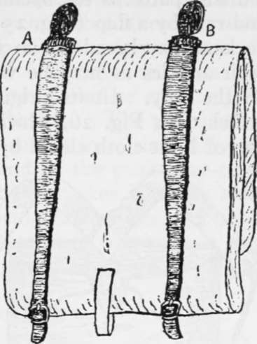
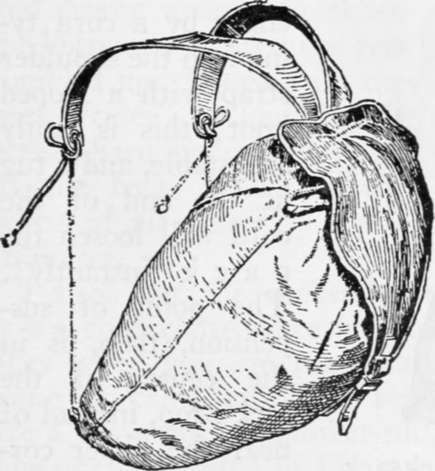

Packs For Pedestrians. Part 2
Description
This section is from the book "Camping And Woodcraft", by Horace Kephart. Also available from Amazon: Camping and Woodcraft.
Packs For Pedestrians. Part 2
The tump or head-band is a good addition not only to a pack harness but to almost any other kind of pack used for carrying heavy weights. Generally it will not be used until the shoulders tire; then it relieves the strain. It is an advantage in climbing steep hillsides. When fording a swift stream, crossing on a foot-log or fallen tree, going over windfalls, crossing ice, or passing other dangerous places, the shoulder straps may be dropped, the head-strap alone being employed; then, if you slip or get overbalanced, the load can be cast off instantly by throwing back the head, and you save your bones or possibly your life. When the tump is not in use, drop it down over the chest.
Military Knapsacks
In most European armies the infantry carry small knapsacks made of leather, stiffened with a framework of wood or bamboo, or reinforced at the sides to give a certain rigidity. Inside the knapsack are stowed spare underwear, fatigue shoes (if any), a reserve ration, spare ammunition, and various small articles. • The blanket, or overcoat, is rolled tightly in a shelter half and strapped around the top and sides, and a mess kettle generally is strapped on the outside. In some models, as the German, the interior is divided into compartments to separate and protect the different articles and to assure a constant distribution of the weight.
A military knapsack is too small for campers, it is much too heavy for its size, and it obliges the wearer to carry most of his outfit outside, attached to it, or strapped separately to the person. Such an airangement is bad, for various reasons. A blanket roll strapped around the outside does not fit well on a soft sack. The knapsack must be stiff, therefore heavy, and it must be narrow, or the complete, pack will project too much beyond the shoulders, worrying the bearer by preventing the free swing of his arms, and proving a serious obstacle when he has to go through the matted undergrowth of a forest. Besides, the blanket is needed as a soft pad against one's back. If worn on the outside, it must be protected by something. A thin tent or shelter cloth will not do, because it, too, needs protection against snags and abrasion. If a poncho or cape is used for the purpose, it must be a heavy one, to stand the wear, whereas it should be light from every other consideration; and your waterproof is best carried where you can get at it and don it quickly.
As for "flip-flops" and "stick-outs" in your equipment, they are anathema. Suppose you have to cross a stream or a deep gulley on a fallen tree. If there is a dangling article about you, such as a haversack, it will swing to one side and tend to throw you off balance. If anything sticks out of your pack, or is tied on the outside of it, the thing will everlastingly be catching in vines and'bushes. Taking it day in and day out, in all kinds of country, the best pack is a commodious sack on your back that contains everything you carry except what goes in your pockets and in one hand.
The soft canvas knapsack formerly used by our own army has no compartments save a narrow outside pocket, under the flap, and is not stiffened. It is cheap (from dealers in second-hand military equipments), very strong, and serviceable as a carryall for one's personal duffel aside from shelter and bedding. This pattern, like most other military ones, is ill-suited to carrying heavy loads, because the points of suspension of the shoulder straps (see Fig. 24, A, B) are too near the outer edge of the knapsack and consequently drag on the weakest part of the shoulders, next to the arms. The strain should come nearer the neck, where the vertebral column will help to support it.
Old types of knapsacks had the straps crossed over the breast — about the worst arrangement that could be devised, since it compresses the bearer's chest and interferes with his breathing. A horizontal strap across the chest to keep shoulder straps Fig. 24. Old U.S.A. Knap-from spreading is like- sack (back). A. B. points of wise oppressive, and suspension bothersome because it must be unbuckled before the knapsack can be cast off.
Rucksacks
From time immemorial the chamois hunters of the Alps have used a simple but ingenious pack sack for carrying light kits and game. This is called a rucksack. It is to-day the favorite packing device of European Alpinists and pedestrian tourists, is much used as a game bag, and, of late years, has come into vogue in our country for light mountaineering and for walking trips in settled regions. In tourists' patterns the opening is protected from dust and rain by a flap (Fig. 25), and one or two covered pockets may be added on the outside (Fig. 27) for such articles as may be wanted from time to time on the way. In its original form the rucksack is sketched in Fig. 26, which shows an open-mouthed bag of light cloth closed by a puckering cord.
Fig. 25. Rucksack with Flap.
Rucksack is a German word meaning "back-sack." In English the umlaut sign (two dots over u) is dropped and the pre nunciation changed so that ruck rhymes with stuck.
The rucksack is distinguished from all other packs by the method of attaching its shoulder straps, which swing directly from the puckering cord at the top, and are fastened below by toggles, hooks, or buckles. (Fig. 25 shows another fastening by a cord tying into the shoulder strap with a looped knot; this is easily adjustable, and a tug at the end of the cord will loosen the pack instantly). The point of suspension, then, is in the center of the sack's top, instead of near the upper corners as on a military knapsack. This brings the strain over the strongest part of the shoulders, where it is least felt.
Since the rucksack is made of light cloth, with no stiffening, it is verv caoacious for its weight: one chat holds half a bushel can be rolled up and tucked into the pocket of a hunting coat. When filled with spare clothing and such other articles as would be carried by one who went afoot through well settled districts and put up for the night at inns or farmhouses, the weight of such a pack is hardly noticeable. On the hike, one's coat or cape, rolled up, may be carried under the flap. The plain rucksack, without flap, is easy to get into, since all you have to do is to pull one end of the puckering cord and the bag is wide open: this makes it handy as a game bag. The weight, being carried low and tight against the body, does not tend to overbalance one in difficult climbing—a point of consequence to mountaineers.
Continue to: